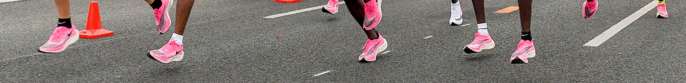

Personer Att Lägga På Minnet
Från ikoniska rekordhållare till legendariska löparstjärnor har löpningens värld präglats av en rad imponerande prestationer och inspirerande berättelser. Människor som Eliud Kipchoge, Kelvin Kiptum, Paula Radcliffe och många många fler har lämnat oöverträffade avtryck i löparhistorien med sina enastående prestationer och banbrytande insatser. Bakom varje löpare finns en berättelse om kamp, beslutsamhet och triumf. Från framgångssagor om att övervinna hinder och motgångar till berättelser om att bryta gränser och nå nya höjder, är löpning en sport som ger upphov till enastående berättelser om uthållighet och viljestyrka. Genom att lära känna dessa inspirerande individer kan vi alla hämta kraft och motivation i våra egna löparresor. Här hittar du namn och information på personer som du sent kommer glömma.
Revolutionerande Personer Inom Sporten
Löpningens historia är rik på legendariska namn som har präglat sporten och inspirerat generationer av löpare över hela världen. Bland dessa ikoner finns namn som Emil Zátopek, en tjeckisk distanslöpare känd för sin osvikliga uthållighet, Kathrine Switzer, den första kvinna som officiellt registrerade sig för Boston Marathon och banade väg för kvinnors deltagande inom maratonlöpning och Roger Bannister, den brittiske löparen som gjorde historiska avtryck när han blev den första människan att springa en engelsk mil (1,609 kilometer) på mindre än fyra minuter.
Nuvarande stjärnor
Idag finns det otaliga proffesionella löpare som hela tiden expanderar gränserna av vad människan är kapabel till. Som exempel har vi till exempel dessa exemplariska exempel: Peres Jepchirchir, en framstående maratonlöpare fårn Kenya som har vunnit flera stora lopp. Jepchirchir är känd för sin starka avslutning och förmåga att tävla framgångsrikt på olika banor runt om i världen. Även Hellen Obiri, som är en av världens bästa långdistanslöpare, känd för sin starka avslutning och taktiska skicklighet. Obiri har vunnit flera internationella titlar och har en imponerande meritlista som sträcker sig över olika distanser.
Det Kommer Fler
Bland dagens unga löpare finns en ny generation av talanger som är redo att ta löpningens värld med storm. Från lovande junioratleter till blivande olympiska medaljörer, är framtidens löparstjärnor redo att göra sitt avtryck och inspirera en hel generation av löpare. Genom att följa deras resa kan vi se fram emot spännande framsteg och prestationer inom löpningens värld.
Bildkälla: Minte Lounge
Bildkälla: Joe Toth, The INEOS